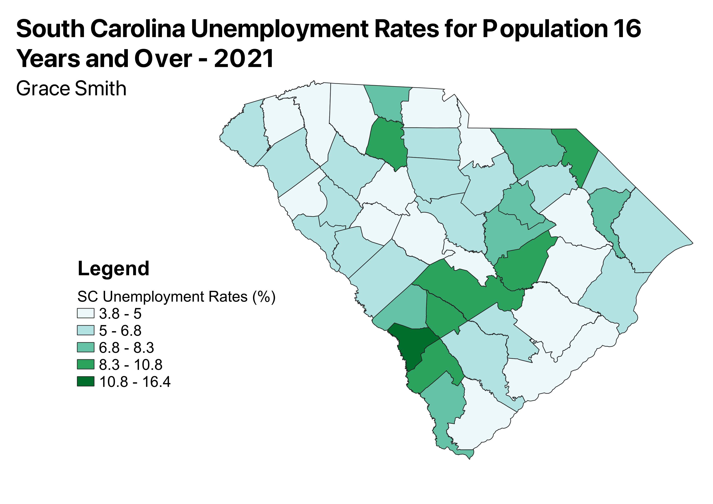

Homework 6: Census data choropleth
Grace Smith
The image below presents a chloropleth of South Carolina's unemployment rates (percentage) for individuals 16 years or older by county in 2021. It should be noted that the data presented was undoubtably impacted by the COVID-19 pandemic which left many unemployed. Unemployment rates are often used by governing bodies and organizations to describe the state of the economy and job market for a particular region. It can bee seen in this chloropleth that most of the counties in South Carolina have unemployment rates between 3.8 and 6.8 (the lightest two shades of teal on the legend). The lower unemployment rates are seen as better, but this is not the only metric that should be used to asses the economic state of an area.

Data used for this project
CSV file
Link to geojson file